Health wearable + app · Parsons AI Startup Design Hackathon · 2026
Acuity is an ecosystem for clarity before a cardiac crisis: a bracelet that senses, AI that learns your normal, and an app that tells you when to act. Designed in a 24-hour hackathon.
Overview
The most dangerous moment in healthcare isn’t the emergency. It’s the uncertainty before it.
The setting
One day to take an AI startup from a human story to a pitch.
The Designpreneurs AI Startup Design Hackathon brought University of Arizona STEM students to Parsons for the first time. Each team had 24 hours to find a real problem, decide where AI earns its place, then prototype and pitch it to a panel of judges: Rudi Anggono (Snap Inc.), Mina Seetharaman (IDEO), and Han-Shen Chen (Microsoft).
Our team matched the event: Lucy and I from Parsons Communication Design, Kritika from Physiology & Medical Sciences at UArizona’s W.A. Franke Honors College.
View the Designpreneurs Hackathon announcement on Instagram ↗
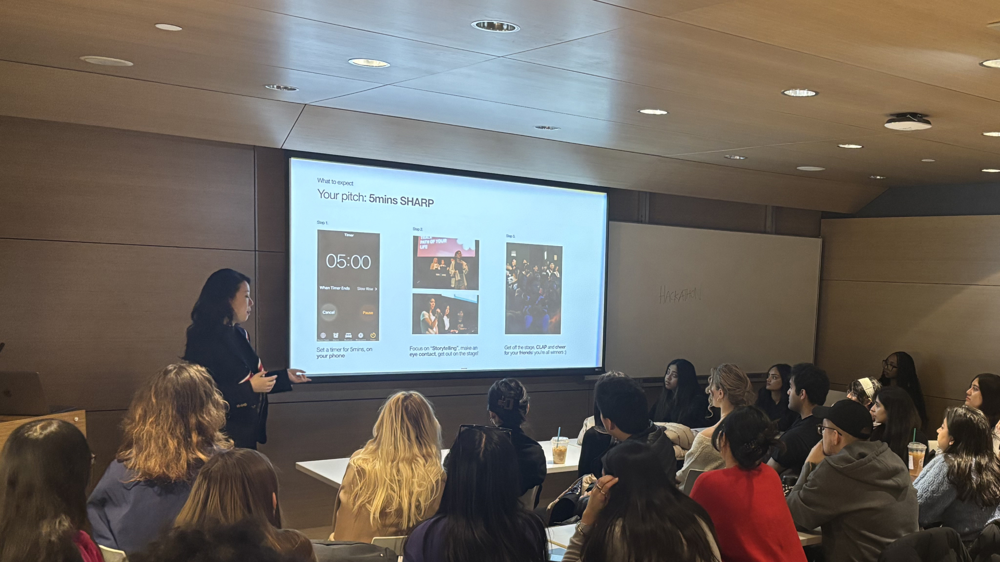
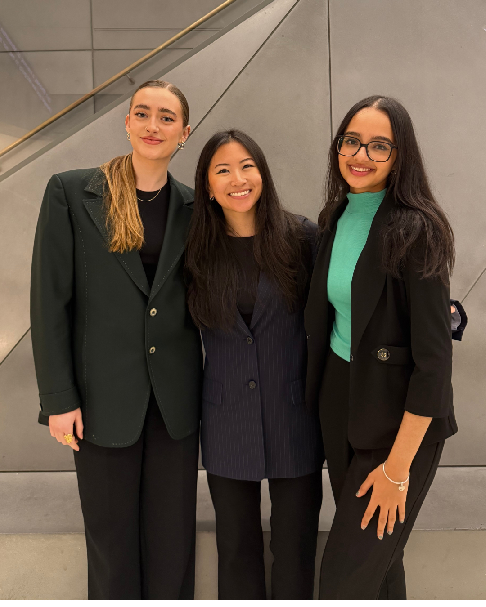
The problem
Half of people feel the warning signs. Only one in five act on them.
We opened the pitch with a show of hands: who has felt something off and didn’t know if it was serious? Who waited, just in case it went away?
Wearables already track heart rate, blood oxygen, and ECG, then leave the meaning to you. So most people guess, and wait.
They feel it coming
Half of people feel warning signs before cardiac arrest. Only 20% act. Marijon et al., 2016
Risk is uneven
Underserved communities carry 31% higher cardiovascular risk, and most cases go undetected. American College of Cardiology, 2024
Knowing when is hard
9 in 10 adults lack the health literacy to know when to seek care. CDC, 2024
Why now?
Sensors are solved. Knowing what the numbers mean isn’t.
Wearables are becoming as common as phones, and their readings are finally accurate. The open problem is interpretation: what a change means for you, and whether to act on it.
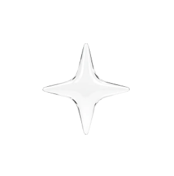
Recognize
By 2035, wearables will be everywhere. Everyone will have the data.
Understand
More data has never meant knowing what it means, or what to do next.
Act
Acuity closes that gap: a clear call before a crisis, not another chart.
How might we
How might we help people know when something is wrong, and act before it’s too late?
Solution
Three levels of urgency answer one question: do I need to act?
The bracelet senses, AI learns your normal, and the app turns any meaningful change into one of three states, each with one next step. A yes/no alert either cries wolf or stays silent. Three levels let Acuity speak only as loudly as the moment needs.
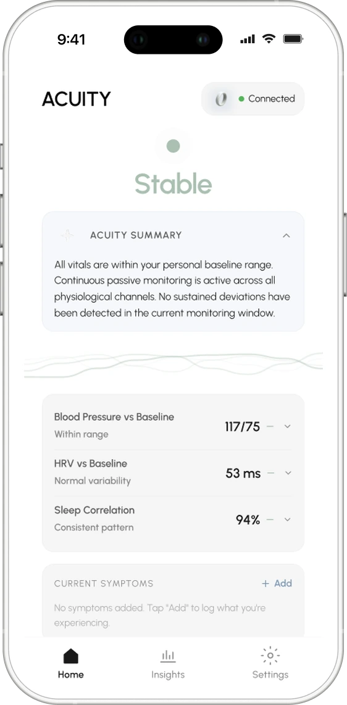
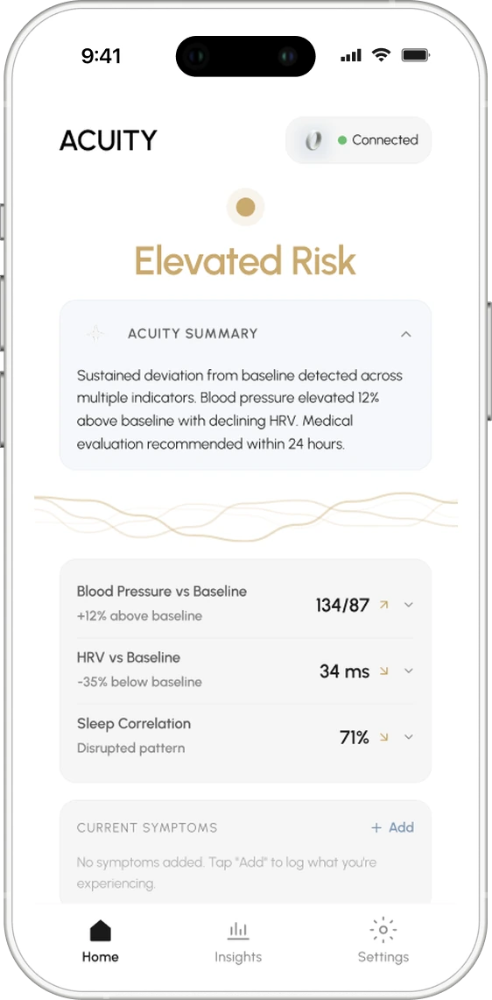
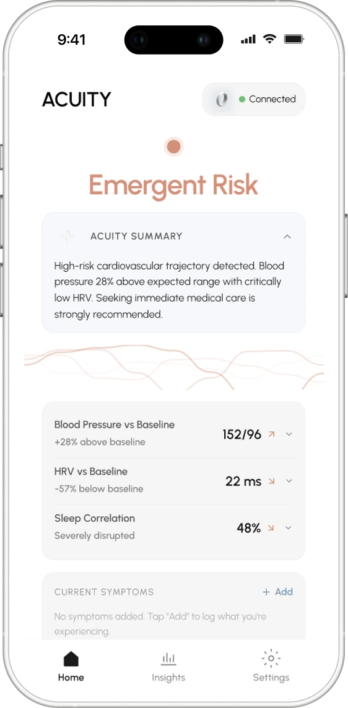
How it works
Calibrate, monitor, respond, act.
Acuity runs as one loop. The bracelet learns your normal, watches for drift, and taps you on the wrist when it matters. A gesture answers it, and the app tells you what to do next.
01 · Calibrate
Calibrate once. Acuity learns your normal.
Pairing starts a 14-day calibration. Acuity models your own baseline, so every alert compares you to you, not to a population average.
02 · Monitor
It watches quietly, and reacts when you drift.
Blood pressure, HRV, and sleep each read against your baseline in plain words. When a change holds, the screen shifts from Stable to Elevated to Emergent. You can also log how you feel, because symptoms don’t always show up in numbers.
03 · Respond
Answer it from your wrist.
The bracelet buzzes twice. A deliberate pinch opens the care card, so you can respond without hunting through an app when you’re already worried.
It senses
The bracelet reads blood pressure, HRV, and sleep all day, then buzzes twice when something changes.
You respond
A deliberate pinch opens the care card. No unlocking, no menus.
It lands on your phone
The alert arrives on the lock screen with one recommended step.
01 · Two buzzes
Something changed. The bracelet tells you first.
02 · Pinch
Opens the care card on your phone.
03 · Hold the pinch
Keep monitoring. Acuity checks again.
04 · Wave
Dismiss. You’re fine, and you said so.
04 · Act
Get one clear next step.
The care card says what changed, compares it to your normal, and recommends one action, from scheduling an evaluation to calling a ride to the nearest ER.
Beyond the alert
Insights show the trend. Settings keep you in control.
Between alerts, Insights tracks blood pressure, HRV, resting heart rate, and SpO2 against your baseline over weeks, with a history of past escalations. Settings holds your emergency contact, health records, and a plain explanation of how the model reads your data.
Insights
Eight weeks of trends against your normal, plus a calendar of past escalations.
Settings
Emergency contact, EHR import, calibration, and a plain-language model explanation.
Research
People notice something is off. They can’t tell if it’s worth acting on.
Kritika led the research, and it kept landing on the same gap: the people at highest risk are the least equipped to decide.

Market research
Wearables are booming. The people most at risk are still left out.
The market is growing fast, but the people with the most to lose struggle to pay for care and often put it off. Our first idea, a broad health monitor for everyone, would have missed them. So we narrowed to early cardiovascular symptoms that don’t fit the textbook, in the groups most often underserved and misdiagnosed.
Wearables are going mainstream
From $70.3B in 2024 to a projected $176.8B by 2030, about 15.9% a year.
Care is hard to afford
28% of adults struggled to pay for care last year, rising to 40% of 18–29s and 41% of Hispanic adults.
36%
So people wait
36% of uninsured adults skipped or postponed care they needed because of the cost.
User interviews
The barrier wasn’t data. It was doubt.
Every conversation described the same moment: feeling something, then talking yourself out of it. People didn’t need more readings. They needed permission to act.
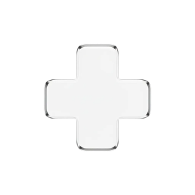
Heart attack survivor
“I kept telling myself it was just stress. Turns out, it was my heart.”
Family of a cardiac arrest victim
“It wasn’t the cardiac arrest that killed him. It was his fear.”
UofA pre-med student
“I still don’t know if this is serious enough to trouble the doctor.”
B2B scalability
Insurers pay, so the people most at risk pay nothing.
Selling to individuals reaches the already-healthy. Selling to health plans reaches the people who need it, with real care behind every alert. We stayed narrow on purpose: no on-demand EMTs, no diagnoses. Acuity flags risk and prompts action; people stay in control.
Insurer-funded SaaS
A PMPM model: zero cost to the user, aimed at high-risk members.
It pays for itself
For 50K high-risk members, $4.8M a year saves a projected $6M.
2–5x
Return on investment
Fewer admissions
Projected: about 100 admissions prevented, a 1–2% drop overall.
AI architecture
Three AI layers, one decision.
The bracelet senses, AI interprets, and the app guides. Acuity models each person’s baseline, watches for sustained drift instead of one-off spikes, and classifies what it finds into a single state. Numbered steps match the screens below.
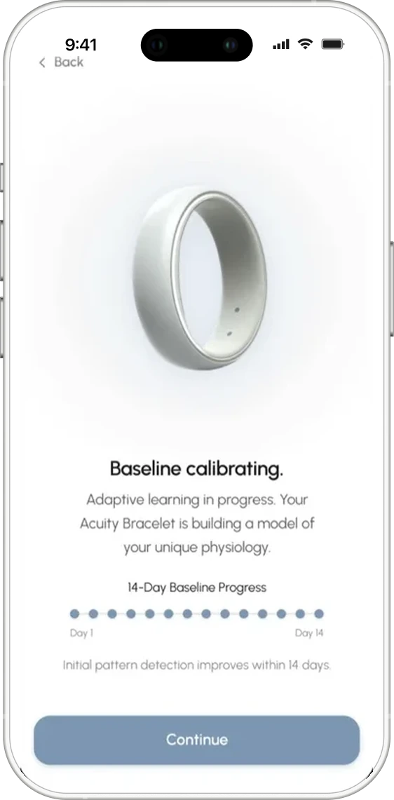
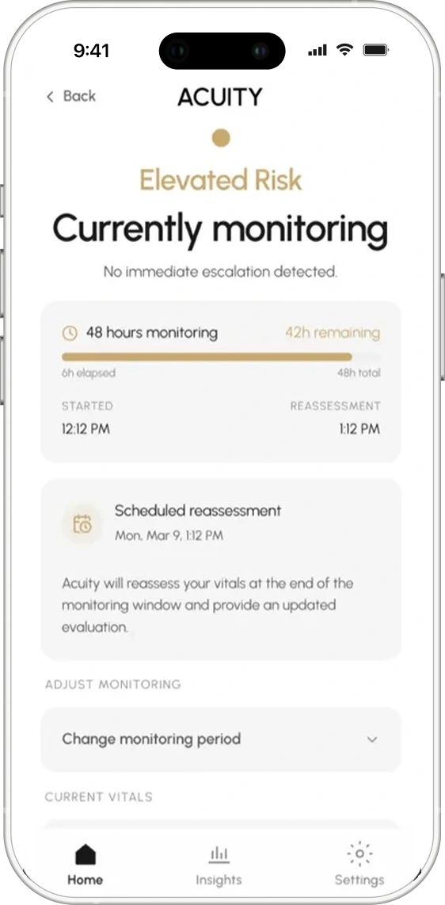
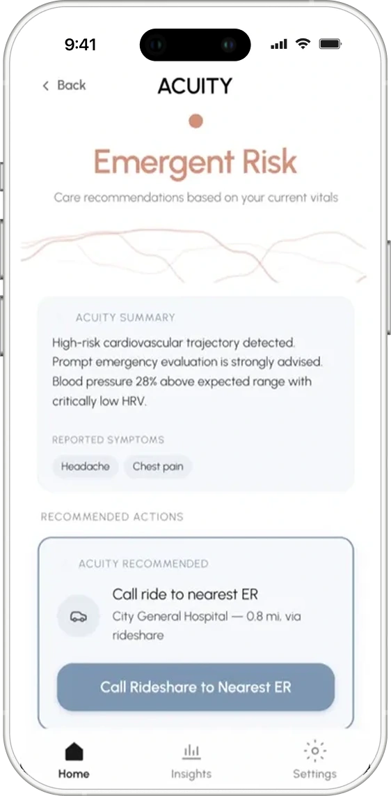
Iterations & testing
Three people built in parallel. AI handled the production.
Designing with AI
AI turned weeks of production into one day.
Kritika set the problem, Lucy built the brand and deck, and I designed the app, all in parallel. Each tool had one job.
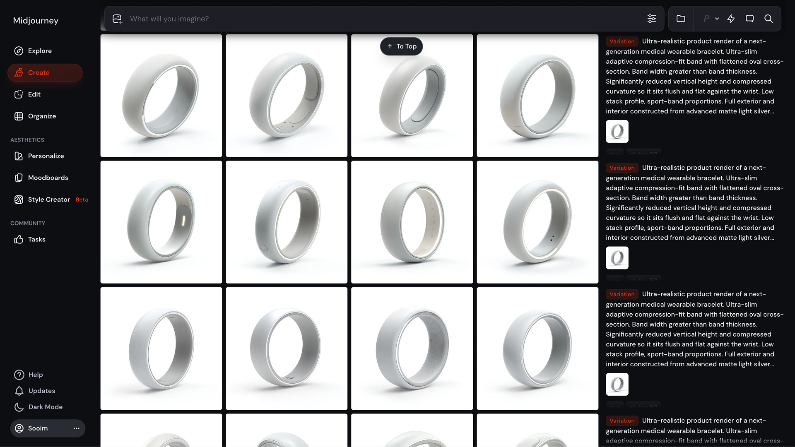
Midjourney
Explored the bracelet’s form before anything was modeled.
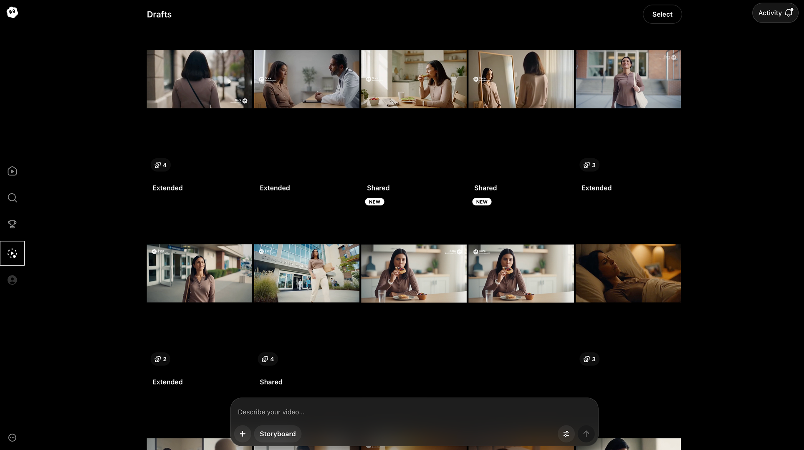
Sora
Generated the scenes for our product film.
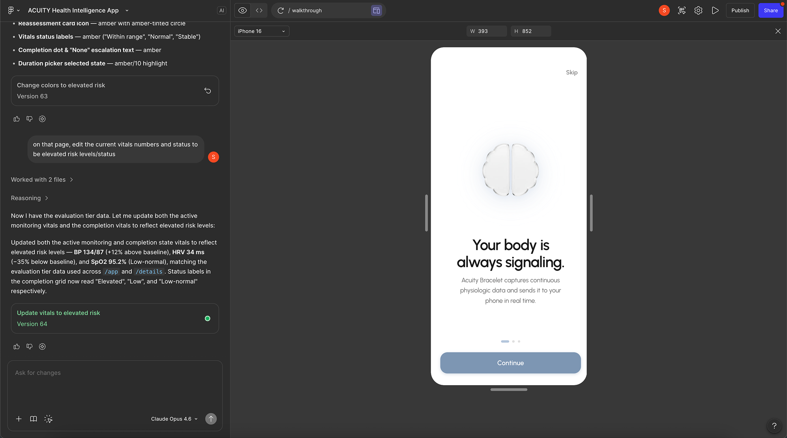
Figma Make
Where I built and iterated the app prototype.
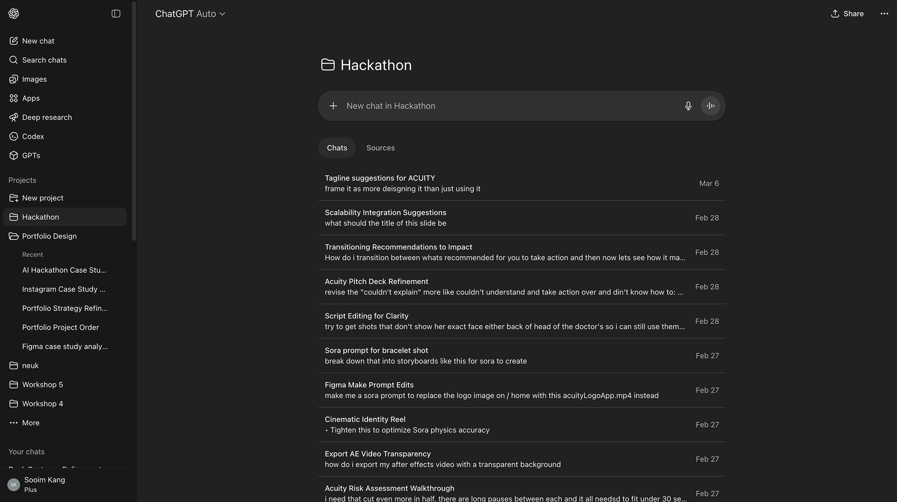
ChatGPT
Shaped the narrative, script, and prompts for the other tools.
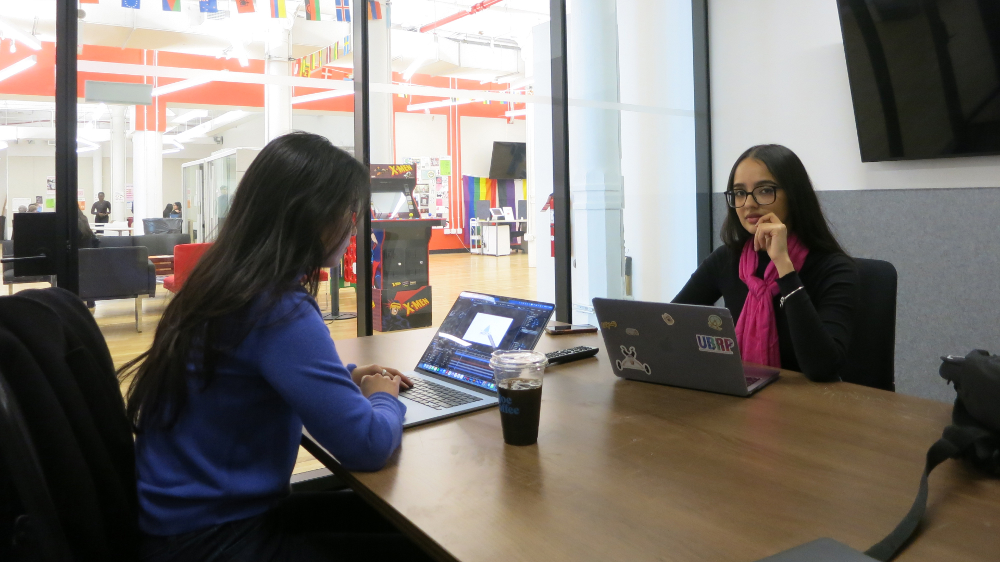
Pitch
People don’t lack health data. They lack clarity about what it means, and when to act.
We pitched Acuity to the judges at hour 24. It was named one of the standout concepts of the event.


Reflection
24 hours forced one thesis instead of a feature list.
The bracelet isn’t the story. Deciding when to speak, and how urgently, is.
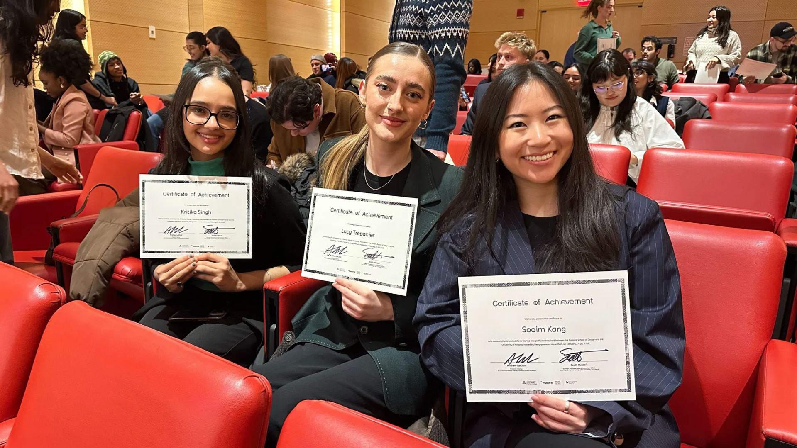
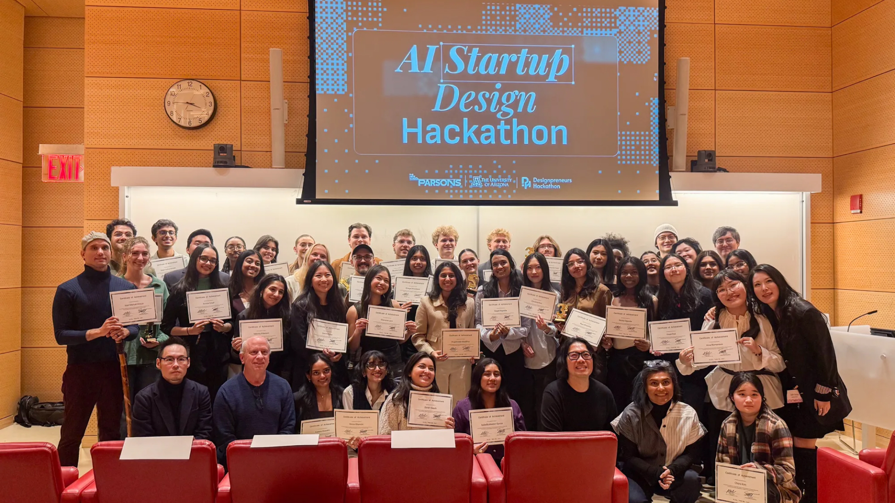
Takeaway · Health data
People don’t act on data. They act on clarity.
Takeaway · Designing with AI
When AI makes production cheap, judgment becomes the job.